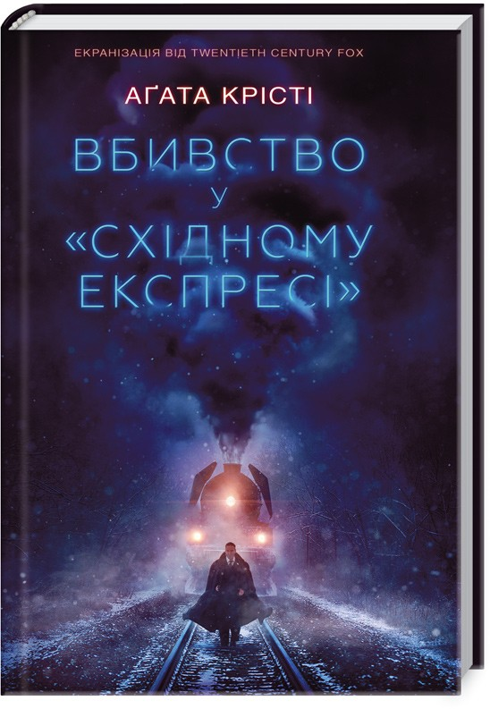

<!DOCTYPE html>
<html lang="en">
<head>
    <meta charset="UTF-8">
    <meta name="viewport" content="width=device-width, initial-scale=1.0">
    <title>Document</title>
</head>

</html>

<div class="detectives-title">
    <h1>Детективи</h1>
<p>Детектив – це один з найпопулярніших літературних жанрів, який зачаровує читачів вже не одне століття. Його головна особливість – це наявність загадки, злочину, який потрібно розкрити. Читач разом з детективом веде розслідування, аналізує докази, підозрює різних персонажів і в кінці разом з героєм дізнається правду.</p>
</div>

<div class="detectives-book1">
    
    <p>"Коли приходить темрява"– це захопливий психологічний трилер, який тримає читача в напрузі від першої до останньої сторінки. Роман поєднує в собі елементи класичного детективу, гостросюжетної драми та містичного трилера, створюючи атмосферу небезпеки та невизначеності.</p>
</div>

<div class="detectives-book2">
    
    <p>"Вбивство в Східному експресі" – це культовий детективний роман британської письменниці Агати Крісті, який вже багато десятиліть захоплює читачів у всьому світі. Це класичний приклад жанру "закритого приміщення", де злочин відбувається в ізольованому місці, а кожен з присутніх має мотив для вбивства.</p>
</div>

<div class="detectives-book3">
    
    <p>"Посібник з убивства для хорошої дівчинки" – це захопливий підлітковий детектив, написаний Голлі Джексон. Роман розповідає історію Піппи, звичайної школярки, яка вирішує розслідувати старе нерозкрите вбивство, що сколихнуло її містечко.</p>
</div>

<div class="detectives-book4">
    
    <p>"Хірург" Тесс Геррітсен – це не просто детектив, це захоплива подорож у світ криміналістики та медицини, де кожен розділ відкриває нові загадки і тримає в напрузі до останньої сторінки.</p>
</div>

<div class="detectives-book5">
    
    <p>"Нещаслива родина" Шарлотти Лапени – це захопливий психологічний трилер, який занурює читача в атмосферу сімейної драми та таємних інтриг. Роман розповідає про трагічну історію,  де за фасадом благополуччя ховаються темні таємниці і смертельні небезпеки.</p>
</div>